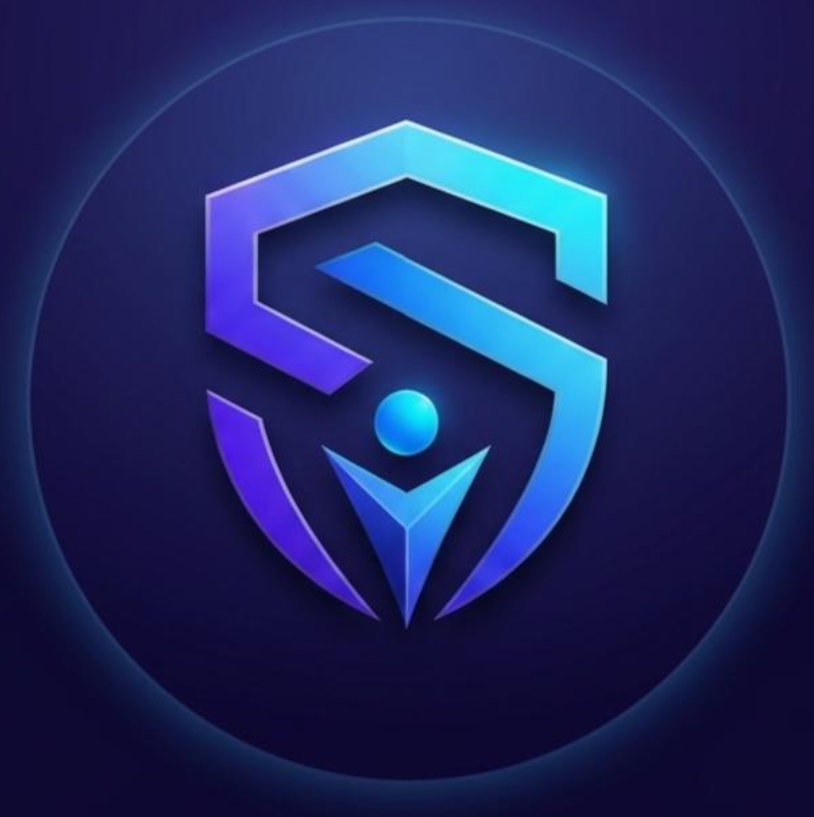

Personal safety wearable that works with a phone or on its own. Sensors and on-device AI detect risk locally. Alerts go out over Bluetooth to the app, or over cellular with an eSIM when the phone is not there. The path is wearable → edge AI → BLE / cellular → mobile → cloud → secure alerts.
Most safety products are a button, a location share, or a wearable that must stay paired to a phone. They fail when the phone is away, Bluetooth drops, the user cannot press a button, raw sensor data is not interpreted, or personal and location data is not protected. SentriX Core keeps sensing, detection, secure communication, and response in one system.
MCU, sensors, battery, and embedded software.
On-device inference. Not all raw data goes to the cloud.
BLE with the phone, or cellular modem plus eSIM alone.
App, location, notifications, APIs, storage, and monitoring.
Auth, encryption, access control, and API protection.
Monitoring, location, and alerts when their phone is unavailable.
Continuous monitoring and alerts from the wearable itself.
People who need continuous watch and fast notification.
Commuting, travel, and outdoor situations.
AI is through training, evaluation, the risk pipeline, and deployment prep. The app has architecture, core UI, and the communication plan. Hardware, on-device deployment, and full-path integration are still ahead.
| Component | Status |
|---|---|
| AI workflow | ~90% |
| AI deployment & validation | In progress |
| Mobile application | ~50% |
| Security architecture | Completed |
| Security implementation | In progress |
| Backend / cloud | In development |
| Hardware | Prototyping |
| Cellular / eSIM | Planned |
| System integration | In progress |
| End-to-end & physical tests | Pending |
| Domain | What it covers |
|---|---|
| AI / ML & edge AI | Risk, prediction, anomaly detection, on-device inference, quantization, TinyML / TensorFlow Lite Micro |
| Hardware | MCU, sensors, PCB, battery, power, enclosure |
| Connectivity | BLE, cellular modem, eSIM, provisioning, low-power cellular |
| Mobile & cloud | App, location, notifications, APIs, storage, monitoring |
| Cybersecurity | Device identity, authentication, encryption, API security, privacy |
Revenue can come from selling the wearable, plus optional recurring services for connectivity, cloud monitoring, advanced alerts, and analytics. The same platform can be offered to institutions through partnerships with organizations that need connected safety.
Funding moves the existing AI and software into one integrated, validated prototype. It goes to hardware prototyping, PCB fabrication, cellular/eSIM integration, embedded AI deployment, system integration, testing, and preparation for a first pilot.
| Year | Devices | Average revenue / device* | Projected revenue* |
|---|---|---|---|
| Year 1 | 500 | EGP 2,500 | EGP 1.25M |
| Year 2 | 2,000 | EGP 2,300 | EGP 4.60M |
| Year 3 | 5,000 | EGP 2,100 | EGP 10.50M |
* Illustrative planning assumptions for discussion. Final figures follow prototype validation, pricing, market testing, and commercialization planning.
The integrated prototype is validated, then tried in a controlled pilot. Pilot results drive product changes, manufacturing preparation, pricing, and later commercial partnerships.
Guidance from people in embedded systems, IoT, AI/ML, cybersecurity, mobile, cloud, and hardware engineering.
Components, development boards, sensors, cellular modules, PCBs, batteries, and other materials for the prototype.
Support for procurement, PCB fabrication, prototype assembly, testing and validation, and development resources.
Access to laboratories, equipment, testing facilities, or technical resources where they are available.
Professional feedback on hardware architecture, embedded implementation, AI deployment, security architecture, cellular connectivity, and system integration.